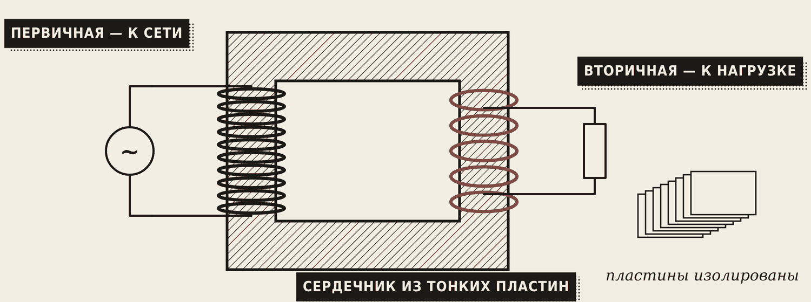
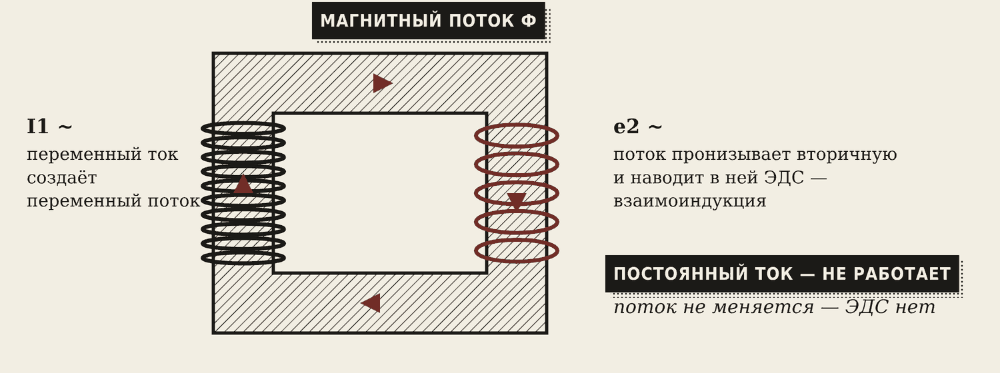
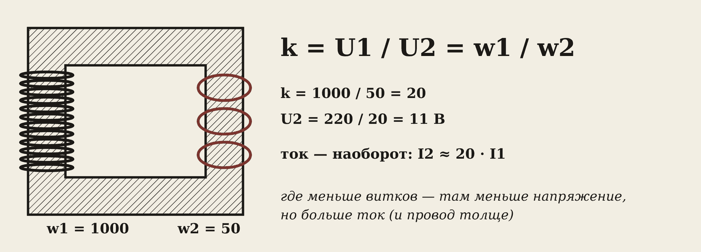
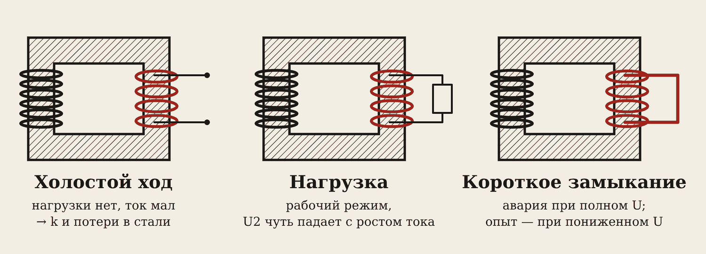
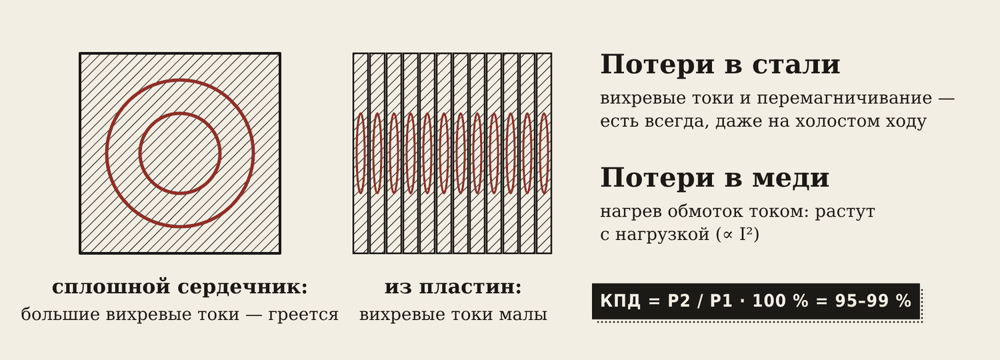
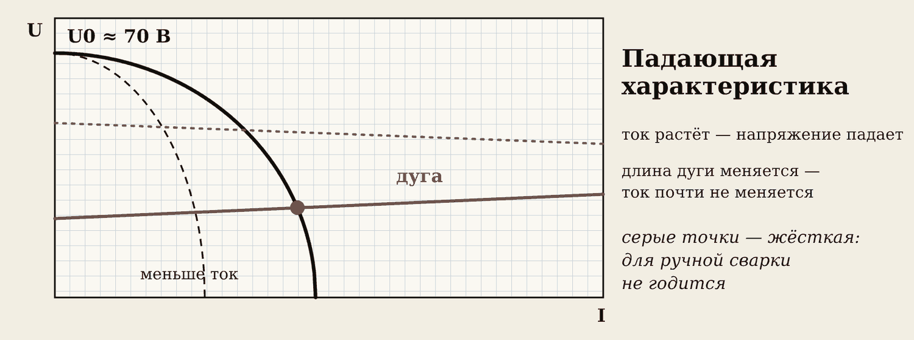
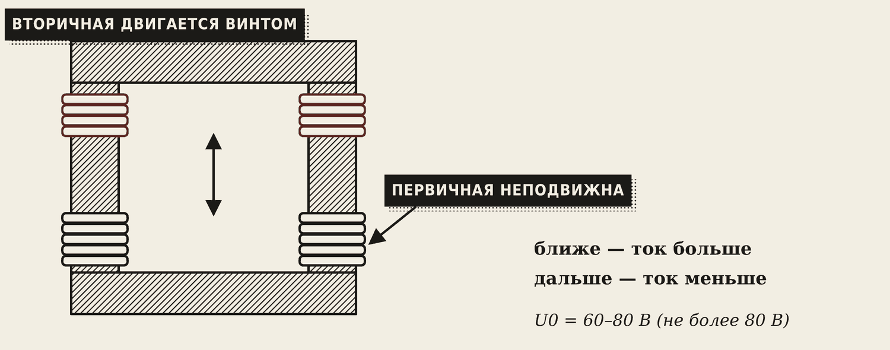
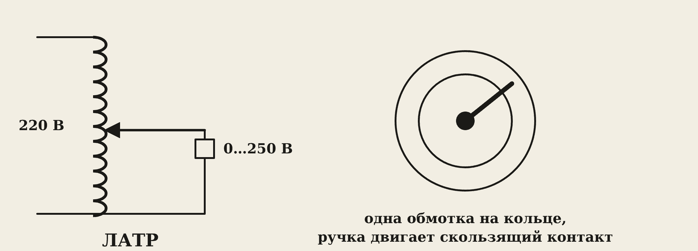
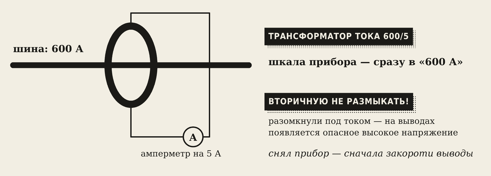

1. Зачем нужен трансформатор
Трансформатор меняет переменное напряжение: повышает его или понижает. Частота при этом остаётся той же — 50 Гц.
Вы встречаете трансформаторы каждый день:
- Будка во дворе с табличкой «Опасно для жизни» — трансформаторная подстанция. В неё по кабелю приходит 10 000 В, а в дома уходит 380/220 В.
- Старый блок питания — тяжёлый, потому что внутри трансформатор: 220 В превращаются в 5–12 В.
- Сварочный трансформатор — из 220 или 380 В делает 60–80 В и ток в сотни ампер.
Зачем вообще высокое напряжение в проводах? Для той же мощности при высоком напряжении нужен маленький ток. Маленький ток меньше греет провода — меньше потерь, провода тоньше. Трансформатор позволяет передавать энергию высоким напряжением, а пользоваться ею — низким.
2. Устройство: сердечник и две обмотки

У трансформатора нет ни одной движущейся детали. Только железо и медь:
- Сердечник (магнитопровод) — замкнутая рамка из тонких листов электротехнической стали. Листы покрыты лаком и изолированы друг от друга.
- Первичная обмотка — подключается к сети, получает энергию.
- Вторичная обмотка — подключается к нагрузке, отдаёт энергию.
Запомните
Провода первичной и вторичной обмоток не соединены между собой. Энергия переходит из одной обмотки в другую через магнитный поток в сердечнике.
3. Как он работает

- По первичной обмотке течёт переменный ток.
- Он создаёт в сердечнике магнитный поток. Сталь проводит поток по кругу, как труба — воду.
- Поток проходит и сквозь вторичную обмотку. Он всё время меняется: 50 раз в секунду туда и обратно.
- Меняющийся поток наводит во вторичной обмотке ЭДС. Это взаимоиндукция (вспомните тему 1.3, эталон М6).
Посмотрите анимацию. Сначала ток переменный — стрелки потока растут, уменьшаются и разворачиваются, лампа горит. Через 9 секунд источник переключается на постоянный ток.
Осторожно
На постоянном токе трансформатор не работает. Постоянный ток создаёт постоянный поток, а ЭДС наводится только при изменении потока. Хуже того: первичная обмотка на постоянном токе — просто провод с маленьким сопротивлением. Ток будет огромным, и обмотка сгорит.
4. Коэффициент трансформации

Один и тот же поток проходит через каждый виток обеих обмоток и наводит в каждом витке одинаковое напряжение. Значит, напряжение обмотки пропорционально числу её витков:
k = U1 / U2 = w1 / w2
Здесь w1 и w2 — число витков первичной и вторичной обмоток, k — коэффициент трансформации. Если k больше 1 — трансформатор понижающий, если меньше 1 — повышающий.
Пример. w1 = 1000, w2 = 50, U1 = 220 В. k = 1000 / 50 = 20. U2 = 220 / 20 = 11 В.
С током — наоборот. Мощность на входе и на выходе почти одинакова: U1·I1 ≈ U2·I2. Напряжение уменьшили в 20 раз — ток во вторичной обмотке в 20 раз больше. Поэтому у сварочного трансформатора вторичная обмотка из толстой медной шины, а первичная — из тонкого провода.
Запомните
Где меньше витков — там меньше напряжение, но больше ток и толще провод.
5. Три режима работы

| Режим | Что на выходе | Что происходит |
|---|---|---|
| Холостой ход | ничего не подключено | ток в первичной маленький (несколько процентов) — он только намагничивает сердечник. Так измеряют k и потери в стали |
| Нагрузка | подключён потребитель | рабочий режим. Чем больше ток, тем немного ниже напряжение на выходе |
| Короткое замыкание | выход закорочен | для обычного трансформатора — авария: токи огромные, обмотки горят |
Опыт короткого замыкания на заводе делают специально, но при сильно пониженном напряжении — около 5–10 % от номинального. Его поднимают ЛАТРом с нуля, пока ток не станет номинальным. Это напряжение называют напряжением КЗ (uк) и пишут на табличке трансформатора в процентах. Так измеряют потери в меди.
6. Потери, КПД и почему трансформатор гудит

Часть энергии теряется и превращается в тепло:
- Потери в стали. Сердечник 50 раз в секунду перемагничивается, и в самом железе наводятся круговые вихревые токи. Если бы сердечник был сплошным, он бы раскалился. Поэтому его набирают из тонких изолированных пластин: каждый вихревой ток заперт в узкой пластине. Эти потери есть всегда, даже без нагрузки.
- Потери в меди. Ток греет провод обмоток. Чем больше ток, тем больше нагрев — пропорционально квадрату тока.
КПД η = P2 / P1 · 100 %
У больших трансформаторов КПД 95–99 % — это одна из самых экономичных машин. У маленьких меньше.
Почему трансформатор гудит? Это не ток жужжит — вибрирует железо. Магнитное поле сжимает пластины сердечника. За один период поле дважды достигает максимума, поэтому при 50 Гц пластины сжимаются 100 раз в секунду. Отсюда низкое «у-у-у». Если трансформатор вдруг загудел громче обычного — это перегрузка или замыкание.
Почему зарядка телефона тёплая, а розетка — нет? Внутри зарядки преобразователь с потерями — они уходят в тепло. А в розетке только контакты, ей нечему греться. Если розетка греется — там плохой контакт, это опасно.
7. Сварочный трансформатор
Сварочный трансформатор устроен как обычный, но работает в режиме, который для обычного — авария: постоянные короткие замыкания (касание электродом).
Четыре требования к нему:
- Напряжение холостого хода U0 = 60–80 В, по ГОСТ 95-77 — не больше 80 В. Меньше — дуга плохо зажигается, больше — опасно для сварщика.
- Выдерживает короткое замыкание. Электрод прилип — ток ограничен, обмотки не горят.
- Падающая характеристика: чем больше ток, тем меньше напряжение.
- Регулирование тока — под диаметр электрода и толщину металла.

Зачем падающая характеристика. Чёрная кривая — сам трансформатор: без нагрузки 70 В, чем больше ток — тем ниже напряжение. Красная линия — дуга: ей нужно около 20–30 В почти при любом токе. Где линии пересеклись — там и работаем.
Рука сварщика дрожит, дуга то длиннее, то короче — красная линия чуть поднимается и опускается. Кривая трансформатора крутая, поэтому ток почти не меняется, и шов получается ровным. При жёсткой характеристике, как у сети, ток прыгал бы в разы.
Запомните
У силового трансформатора задача — держать напряжение постоянным. У сварочного — ограничивать ток.

Как регулируют ток. Самый распространённый способ — подвижная обмотка. Первичная обмотка закреплена, вторичная ездит по сердечнику на винте: крутите ручку сверху аппарата.
- Обмотки ближе — магнитная связь сильнее, ток больше.
- Обмотки дальше — больше потока «уходит мимо» вторичной обмотки, ток меньше.
Другие способы: магнитный шунт (стальная вставка между обмотками) и переключение витков (ступенями: «малые токи / большие токи»).
На практике. Ток грубо подбирают по диаметру электрода: 30–40 А на 1 мм. Электрод 3 мм — около 90–120 А.
Шильдик сварочного трансформатора. Найдите на табличке:
| Надпись | Пример | Что значит |
|---|---|---|
| U1 | 380 В, 2 фазы | от какой сети работает |
| U0 | 65 В | напряжение холостого хода |
| I2 | 90–250 А | пределы сварочного тока |
| ПВ | 35 % при 250 А | сколько можно варить без перерыва |
| S | 18 кВ·А | мощность из сети |
ПВ — продолжительность включения: какую часть цикла можно варить на этом токе, чтобы аппарат не перегрелся. ПВ 35 % — примерно треть времени варим, остальное — отдыхаем. На меньшем токе ПВ больше. Длительность цикла написана в паспорте аппарата.
8. Особые трансформаторы

Автотрансформатор — трансформатор с одной обмоткой: часть витков общая для входа и выхода. Он легче и дешевле обычного. Пример — стабилизатор напряжения на даче.
ЛАТР (лабораторный автотрансформатор) — автотрансформатор с ручкой: плавно даёт напряжение от 0 до примерно 250 В. На ПР № 8 им поднимают напряжение в опыте короткого замыкания.
Осторожно
У автотрансформатора сеть и нагрузка соединены электрически. Даже при 10 В на выходе один из проводов может быть под фазой 220 В относительно земли. Поэтому для переносных ламп и инструмента на 12–42 В применяют только обычные трансформаторы с отдельными обмотками.

Трансформатор тока нужен, чтобы измерить большой ток обычным амперметром на 5 А. Шину пропускают через кольцо: шина — это первичная обмотка из одного витка, на кольце — много витков вторичной. Ток 600 А превращается в 5 А, шкалу прибора сразу рисуют в «600 А».
Осторожно
Вторичную обмотку трансформатора тока нельзя размыкать, пока по шине течёт ток. Разомкнули — на выводах появляются сотни и тысячи вольт: опасно для жизни и для изоляции. Снимаете прибор — сначала закоротите выводы перемычкой.
Трансформатор напряжения понижает высокое напряжение (6–10 кВ) до 100 В для обычного вольтметра. Его, наоборот, нельзя закорачивать.
Словарик
- Первичная обмотка — обмотка, подключённая к сети.
- Вторичная обмотка — обмотка, подключённая к нагрузке.
- Магнитопровод (сердечник) — замкнутая рамка из тонких изолированных пластин стали.
- Взаимоиндукция — наведение ЭДС в одной катушке меняющимся магнитным полем другой.
- Коэффициент трансформации k — во сколько раз трансформатор меняет напряжение: k = U1 / U2 = w1 / w2.
- Холостой ход — режим, когда вторичная обмотка разомкнута.
- Напряжение КЗ, uк — напряжение, при котором в опыте КЗ течёт номинальный ток, в процентах от номинального.
- Вихревые токи — круговые токи внутри металла сердечника; греют его.
- U0 — напряжение холостого хода сварочного трансформатора.
- Падающая характеристика — чем больше ток, тем меньше напряжение на выходе.
- ПВ, % — продолжительность включения: доля цикла, когда можно работать на этом токе.
- ЛАТР — лабораторный автотрансформатор с плавной регулировкой.
- Трансформатор тока — понижает большой ток до 5 А для амперметра.
Эталоны в тетрадь
Перепишите в тетрадь по билетам — каждый эталон на отдельную страницу, с рисунком и строкой «Мой пример».
Трансформатор
Трансформатор: назначение, устройство, принцип действия, коэффициент трансформации.
- Трансформатор повышает или понижает переменное напряжение. Частота при этом не меняется.
- Устройство: стальной сердечник из тонких пластин и две обмотки — первичная (к сети) и вторичная (к нагрузке). (Рисунок.)
- Принцип: переменный ток в первичной обмотке создаёт переменный магнитный поток в сердечнике, а он наводит ЭДС во вторичной (взаимоиндукция). На постоянном токе не работает.
- Коэффициент трансформации: k = U₁ / U₂ = w₁ / w₂. Где меньше витков — там меньше напряжение, но больше ток.
- Примеры: трансформаторная будка во дворе (10 кВ → 380/220 В), сварочный трансформатор.
Режимы работы, потери и КПД
Режимы работы трансформатора: холостой ход, нагрузка, короткое замыкание. Потери и КПД.
- Холостой ход — нагрузка не подключена, ток маленький. Так измеряют k и потери в стали.
- Рабочий режим (нагрузка) — с ростом тока напряжение на вторичной обмотке немного падает.
- Короткое замыкание — для обычного трансформатора авария. Опыт КЗ делают при пониженном напряжении, чтобы измерить потери в меди.
- Потери: в стали (вихревые токи, перемагничивание) и в меди (нагрев обмоток). КПД η = P₂ / P₁ · 100 %, у больших трансформаторов 95–99 %.
- Почему трансформатор гудит: пластины сердечника вибрируют от переменного магнитного поля (100 раз в секунду).
Сварочный трансформатор
Сварочный трансформатор: требования к нему, способы регулирования сварочного тока.
- Понижает сетевые 220/380 В до 60–80 В на холостом ходу (по ГОСТ 95-77 — не более 80 В) — этого хватает, чтобы зажечь дугу, и это ещё относительно безопасно.
- Выдерживает короткое замыкание (касание электродом) — для него это рабочий режим, ток КЗ ограничен.
- Падающая характеристика: чем больше ток, тем меньше напряжение. Дуга горит устойчиво, ток не «улетает» при изменении длины дуги.
- Регулирование тока: изменяют расстояние между обмотками (подвижная обмотка), двигают магнитный шунт или переключают число витков.
- Сварка идёт на переменном токе. Отличие от силового трансформатора: силовой держит напряжение постоянным, а сварочный — ограничивает ток.
Специальные трансформаторы
Автотрансформатор, ЛАТР, измерительные трансформаторы тока и напряжения.
- Автотрансформатор — одна обмотка с отводом, часть витков общая. Легче и дешевле, но сеть и нагрузка связаны напрямую — опаснее. Пример: стабилизатор напряжения на даче.
- ЛАТР — лабораторный автотрансформатор: плавно меняет напряжение ручкой (от 0 до ≈ 250 В).
- Трансформатор тока — чтобы измерять большие токи обычным амперметром на 5 А. Вторичную обмотку нельзя размыкать под током — на ней появится опасное напряжение.
- Трансформатор напряжения — чтобы измерять высокие напряжения (6–10 кВ) обычным вольтметром на 100 В.
Проверь себя
Сначала ответьте сами — в тетради или вслух. Потом нажмите на вопрос, чтобы увидеть ответ.
1Почему трансформатор не работает на постоянном токе?
Постоянный ток создаёт постоянный магнитный поток, а ЭДС во вторичной обмотке наводится только при изменении потока.
2w1 = 500, w2 = 50, U1 = 220 В. Найдите k и U2.
k = 500 / 50 = 10; U2 = 220 / 10 = 22 В.
3U1 = 220 В, U2 = 11 В, ток первичной I1 = 0,5 А. Какой ток во вторичной?
k = 220 / 11 = 20; I2 ≈ 20 · 0,5 = 10 А. Где напряжение меньше — там ток больше.
4Зачем сердечник набирают из тонких пластин?
Чтобы уменьшить вихревые токи и нагрев сердечника (потери в стали).
5Почему опыт короткого замыкания делают при пониженном напряжении?
При полном напряжении ток КЗ в 10–20 раз больше номинального — обмотки сгорят. Напряжение поднимают с нуля только до номинального тока.
6Почему трансформатор гудит и с какой частотой?
Пластины сердечника сжимаются в магнитном поле дважды за период — 100 раз в секунду при 50 Гц.
7Какое напряжение холостого хода допустимо у сварочного трансформатора?
60–80 В, не более 80 В по ГОСТ 95-77.
8Зачем сварочному трансформатору падающая характеристика?
Чтобы ток почти не менялся, когда меняется длина дуги: дуга горит устойчиво, шов ровный.
9Обмотки сварочного трансформатора раздвинули. Ток стал больше или меньше?
Меньше: больше магнитного потока проходит мимо вторичной обмотки (рассеяние).
10Что нельзя делать со вторичной обмоткой трансформатора тока?
Размыкать её, пока по шине течёт ток: на выводах появится опасное высокое напряжение.
11Сварочный трансформатор: U1 = 380 В, U0 = 70 В. Найдите k.
k = 380 / 70 ≈ 5,4. Ток вторичной примерно в 5,4 раза больше тока первичной.
Попробуйте в лаборатории
Откройте на телефоне или компьютере — ничего устанавливать не нужно.
Ответы к «Проверь себя»
- Постоянный ток создаёт постоянный магнитный поток, а ЭДС во вторичной обмотке наводится только при изменении потока.
- k = 500 / 50 = 10; U2 = 220 / 10 = 22 В.
- k = 220 / 11 = 20; I2 ≈ 20 · 0,5 = 10 А. Где напряжение меньше — там ток больше.
- Чтобы уменьшить вихревые токи и нагрев сердечника (потери в стали).
- При полном напряжении ток КЗ в 10–20 раз больше номинального — обмотки сгорят. Напряжение поднимают с нуля только до номинального тока.
- Пластины сердечника сжимаются в магнитном поле дважды за период — 100 раз в секунду при 50 Гц.
- 60–80 В, не более 80 В по ГОСТ 95-77.
- Чтобы ток почти не менялся, когда меняется длина дуги: дуга горит устойчиво, шов ровный.
- Меньше: больше магнитного потока проходит мимо вторичной обмотки (рассеяние).
- Размыкать её, пока по шине течёт ток: на выводах появится опасное высокое напряжение.
- k = 380 / 70 ≈ 5,4. Ток вторичной примерно в 5,4 раза больше тока первичной.